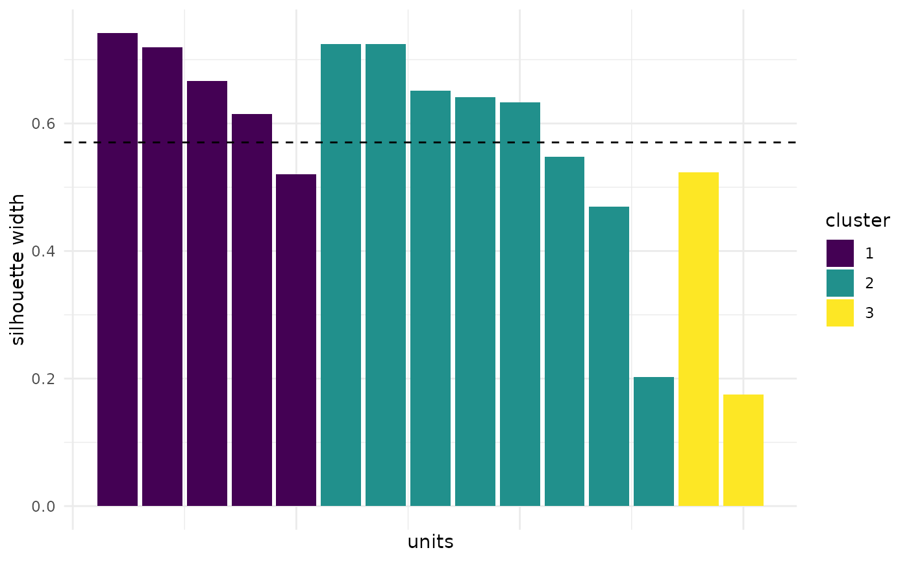

The silhouette width of each unit shows how well it fits into its cluster. Values close to 1 indicate a good fit, negative values indicate that the unit is closer to another cluster. Ejarque-Gonzalez and Butturini (2014) chose the number of fluorescence components by the mean silhouette width and the number of negative silhouettes.
Arguments
- x
object of class eemsom with clusters (see
eemsom_cluster) or of class eemsom_regions (seeeemsom_regions)
References
Rousseeuw, P. J. (1987). Silhouettes: A graphical aid to the interpretation and validation of cluster analysis. Journal of Computational and Applied Mathematics 20, 53-65. doi:10.1016/0377-0427(87)90125-7
Ejarque-Gonzalez, E., Butturini, A. (2014). Self-Organising Maps and Correlation Analysis as a Tool to Explore Patterns in Excitation-Emission Matrix Data Sets and to Discriminate Dissolved Organic Matter Fluorescence Components. PLoS ONE 9(6), e99618. doi:10.1371/journal.pone.0099618
See also
Other clustering:
eemsom_cluster(),
eemsom_kselect(),
eemsom_split()
Other plots:
eemsom_plot_cplane(),
eemsom_plot_map(),
eemsom_plot_stability(),
eemsom_plot_training(),
ggeem.eemsom(),
ggeem.eemsom_regions()
Examples
data(eem_list)
som <- eemsom(eem_list, rlen = 100, seed = 42)
som <- eemsom_cluster(som, k = 3)
eemsom_plot_silhouette(som)
